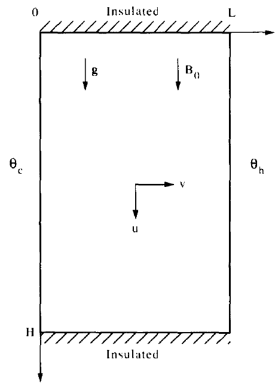

Análise de Escala - MHD
A presente análise de escala se desenvolve para um problema convecção natural em cavidade preenchida com fluido condutivo e sem blocos interno, o qual escoa pelo efeito de convecção natural sobre ação de um campo magnético.
Geometria do Problema: Considera-se uma cavidade bidimensional de altura \(H\), comprimento \(L\), preenchida com um fluido newtoniano. O fluido condutivo é afeta por um campo magnético externo e uniforme \(B_{0}\).
Neste anślise, estamos interessado no comportamento transiente do fluido pela troca de calor através das paredes da cavidade, nas temperaturas de \(+\Delta T/2\) e \(-\Delta T/2\) nas paredes resfriada e aquecida, respectivamente. As paredes superior e inferior \((y=0,H)\) permanecem isoladas através do tempo. As condições iniciais são de temperatura nula para o fluido \((T=0)\) e campo de velocidades nulo \((u=v=0)\).
Equações de balanço
As equações governantes de balanço de massa, quantidade de movimento e energia na cavidade são descritas por:
\(\displaystyle\frac{\partial u}{\partial x}+\frac{\partial v}{\partial y}=0\)
\(\displaystyle\frac{\partial u}{\partial t}+u \frac{\partial u}{\partial x}+v \frac{\partial u}{\partial y}=-\frac{1}{\rho} \frac{\partial P}{\partial x}+\nu\left(\frac{\partial^{2} u}{\partial x^{2}}+\frac{\partial^{2} u}{\partial y^{2}}\right)-\displaystyle\frac{\sigma B_{0}^{2}}{\rho}u\)
\(\displaystyle\frac{\partial v}{\partial t}+u \frac{\partial v}{\partial x}+v \frac{\partial v}{\partial y}=-\frac{1}{\rho} \frac{\partial P}{\partial y}+\nu\left(\frac{\partial^{2} v}{\partial x^{2}}+\frac{\partial^{2} v}{\partial y^{2}}\right)-g\left[1-\beta\left(T-T_{0}\right)\right]\)
\(\displaystyle\frac{\partial T}{\partial t}+u \frac{\partial T}{\partial x}+v \frac{\partial T}{\partial y}=\alpha\left(\frac{\partial^{2} T}{\partial x^{2}}+\frac{\partial^{2} T}{\partial y^{2}}\right)\)
Destaca-se nas equações de balanço de quantidade de movimento a modelagem do fluido como Boussinesq-incompressível, i.e., \(\rho\) constante em toda equação exceto no termo de força da quantidade de movimento em \(y\), o qual é representado por \(\rho[1-\beta (T-T_{0})]\). Adicionalmente, o termo \(\sigma B_{0}^{2}u/\rho\) descreve a influência do campo magnético na equação de balanço da quantidade de movimento em \(x\).
Análise de Escala
Ao invés de resolver numericamente as equações diferenciais parciais descritas acima, dedica-se na presente seção às análises das escalas dos termos para prever teoricamente os tipos de escoamento e padrões de tranferência de calor que se desenvolvem na cavidade. Imediatamente após \(t=0\), dado que o fluido próximo a cada parede encontra-se parado, a equação do balanço de energia pode ser expressada em escalas de balanço entre a inércia térmica e condutividade normal a parede,
\(\displaystyle\frac{\Delta T}{t} \sim \alpha \frac{\Delta T}{\delta_{T}^{2}}.\)
Esta proporcionalidade de escalas segue do reconhecimento de \(\Delta T\), \(t\) e \(\delta_{t}\) como escalas de \(T\), \(t\) e \(x\) no balanço de energia. Na mesma equação, considera-se \(u=v=0\) e \(\partial^{2} T/\partial y^{2} << \partial^{2} T/\partial x^{2}\) devido à espessura da camada térmica \(\delta_{t}\) ser muito menor que a altura da cavidade em \(t=0^{+}\) (destaca-se para \(y\sim H\) e \(x \sim \delta_{t}\)). A equação acima dita que inicialmente (\(t=0^{+}\)) as paredes resfriadas e aquecidas são revestidas por uma cada condutiva de expessura que aumenta na ordem
\(\delta_{T} \sim(\alpha t)^{1 / 2}.\)
A escala da velocidade é dominada pelo efeito de empuxo na cavidade próximo aos pontos de maior gradiente de temperatura (paredes verticais resfriada e aquecida). Eliminando o termo de pressão (\(P\)) pela junção das equações de quantidade de movimento em \(x\) e \(y\), tem-se a relação
\(\displaystyle\frac{\partial}{\partial x}\left(\frac{\partial v}{\partial t}+u \frac{\partial v}{\partial x}+v \frac{\partial v}{\partial y}\right)-\frac{\partial}{\partial y}\left(\frac{\partial u}{\partial t}+u \frac{\partial u}{\partial x}+v \frac{\partial u}{\partial y}\right)= \nu\left[\frac{\partial}{\partial x}\left(\frac{\partial^{2} v}{\partial x^{2}}+\frac{\partial^{2} v}{\partial y^{2}}\right)-\frac{\partial}{\partial y}\left(\frac{\partial^{2} u}{\partial x^{2}}+\frac{\partial^{2} u}{\partial y^{2}}\right)\right]+g \beta \frac{\partial T}{\partial x}+\frac{\sigma B_{0}^{2}}{\rho}\frac{\partial u}{\partial y}\)
representada em função apenas dos termos de velocidade, Boussinesq e magnetismo.
A equação acima pode ser dividida em quatro partes: no lado esquerdo da equação tem-se os termos de inércia e no lado direito os termos viscosos, de empuxo e magnetismo. Destacando os termos que predominam em escala de cada uma das partes, têm-se
\(\underbrace{\displaystyle\frac{\partial^{2} v}{\partial x \partial t}}_{Inércia}, \quad \underbrace{\nu\displaystyle\frac{\partial^{3} v}{\partial x^{3}}}_{Viscoso}, \quad \underbrace{g \beta \displaystyle\frac{\partial T}{\partial x}}_{Empuxo}, \quad \underbrace{\displaystyle\frac{\sigma B_{0}^{2}}{\rho} \frac{\partial u}{\partial y} \rightarrow \frac{\sigma B_{0}^{2}}{\rho} \frac{\partial v}{\partial x} }_{Magnetismo}\)
dado a escala de cada termo
\(\underbrace{\displaystyle\frac{v}{\delta_{T} t}}_{Inércia} \quad + \quad \underbrace{\nu \displaystyle\frac{v}{\delta_{T}^{3}}}_{Viscoso} \quad \sim \quad \underbrace{\displaystyle\frac{g \beta \Delta T}{\delta_{T}}}_{Empuxo} \quad + \quad \displaystyle\frac{\sigma B_{0}^{2}}{\rho} \frac{v}{\delta_{T}} .\)
A força que promove o escoamento é dada pelo efeito de empuxo \((g\beta\Delta T)/\delta_{T}\), a qual deve se balancear em relação as forças de inércia, viscosas e magneticas durante o escoamento. Dividindo a equação acima pela viscosidade e substituindo a escala de \(\delta_{T}^{2}\sim \alpha t\), tem-se
\(\underbrace{\displaystyle\frac{1}{Pr}}_{Inércia} \quad + \quad \underbrace{1}_{Viscoso} \quad \sim \quad \underbrace{ \displaystyle\frac{g\beta\Delta T\delta_{T}^{2}}{\nu v} }_{Empuxo} \quad + \quad \underbrace{\displaystyle\frac{\sigma B_{0}^{2}\delta_{T}^{2}}{\rho\nu} }_{Magnetismo} \quad \quad \longrightarrow \quad \quad \displaystyle\frac{1}{Pr}+1- \displaystyle\frac{\sigma B_{0}^{2}\delta_{T}^{2}}{\mu} \sim \frac{g\beta\Delta T\delta_{T}^{2}}{\nu v},\)
reescrevendo a equação acima em função de \(v\):
\(v \quad \sim \quad \displaystyle\frac{g\beta\Delta T\delta_{T}^{2}H^{2}}{\nu }\displaystyle\left(\frac{Pr}{\left(C_{0}+C_{1}Pr\right)H^{2} - C_{2}Pr\delta_{T}^{2}Ha^{2}}\right)\)
onde \(Ha=\sigma H^{2} B_{0}^{2}/\mu\) é o número de Hartmann.
Como próximo passa na análise de escala, a atenção torna-se de volta para a equação de balanço da energia. O calor conduzido das paredes para o fluido pela camada térmica \(\delta_{T}\) não é unicamente gasto através do espaçamento da camada, dado que parte desta entrada de calor é transportada pela camada \(\delta_{T}\) com velocidade \(v\) resultante do empuxo. Consequentimente, a equação da energia resulta na competição entre três efeitos distintos:
\(\underbrace{\displaystyle\frac{\Delta T}{t}}_{Inércia}, \quad \quad \underbrace{v\displaystyle\frac{\Delta T}{H}}_{Convecção}, \quad \quad \underbrace{\alpha\displaystyle\frac{\Delta T}{\delta_{T}^{2}}}_{Condução}.\)
Com o aumento de \(t\), o efeito de convecção aumenta enquanto o efeito de inércia diminui em relevância. Considerando o tempo \(t_{f}\) como o momento em que o balanço de energia expressa um equilíbrio entre a condução de calor da parede e a entalpia carregada verticalmente pelo empuxo, tem-se
\(v\displaystyle\frac{\Delta T}{H}\sim \alpha\frac{\Delta T}{\delta_{T}^{2}} \quad \rightarrow \quad \delta_{T,f}\sim\sqrt{\displaystyle\frac{H\alpha}{v}}.\)
Substituindo a equação de escala da velocidade, obtém-se uma equação quadratica em termos de \(\delta_{T,f}\)
\(Ra_{H}\delta_{T}^{4} + C_{2}\delta_{T}^{2}Ha^{2}H^{2} - \displaystyle\frac{\left(C_{0}+C_{1}Pr\right)H^{4}}{Pr} \sim 0\)
onde \(Ra_{H}=g\beta \Delta T H^{3}/(\alpha\nu)\) é o número de Rayleigh baseado na altura da cavidade. Resolvendo a equação acima e reajustando as constantes
\(\delta_{T}^{2}=-C_{2} Ha^{2}H^{2}Ra_{H}^{-1} + H^{2}Ra_{H}^{-1/2}\left(\displaystyle\frac{C_{0}+C_{1}Pr}{Pr}\right)^{1/2} \quad \longrightarrow \quad \delta_{T}=H\left( C_{1} \left(Ra_{H}\left(\displaystyle\frac{Pr}{C_{0}+Pr}\right)\right)^{-1/2} -C_{2} Ha^{2} Ra_{H}^{-1} \right)^{1/2}\)
Correlação do Nusselt
Considerando \(\overline{Nu}=\displaystyle\frac{q^{'}}{q^{'}_{\textrm{condução pura}}}\) o número de Nusselt médio no tempo em que cavidade atinge o regime permanente (i.e., \(t_{f}\)), tem-se a fluxo de calor conduzida puramente por condução e o fluxo de calor total dados por
\(q^{'}_{\textrm{condução pura}}=\displaystyle\frac{kH\Delta T}{L} \quad \longrightarrow \quad q^{'}= (\rho v \delta_{T})_{f}c_{P}\Delta T = \displaystyle\frac{k}{\delta_{T,f}} H\Delta T = k\Delta T \left( C_{1} \left(Ra_{H}\left(\displaystyle\frac{Pr}{C_{0}+Pr}\right)\right)^{-1/2} -C_{2} Ha^{2} Ra_{H}^{-1} \right)^{-1/2},\)
substituindo as equações do fluxo de calor obtém-se na forma final a correlação do número de Nusselt médio que estima a capacidade de transferência de calor através da cavidade:
\(\overline{Nu}= \displaystyle\frac{L}{H} \left( C_{1} \left(Ra_{H}\left(\displaystyle\frac{Pr}{C_{0}+Pr}\right)\right)^{-1/2} -C_{2} Ha^{2} Ra_{H}^{-1} \right)^{-1/2}.\)